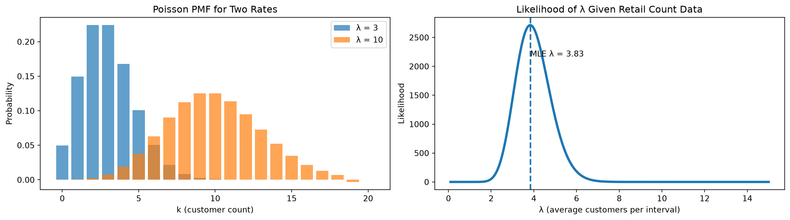
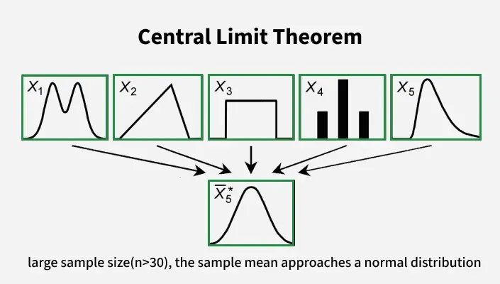
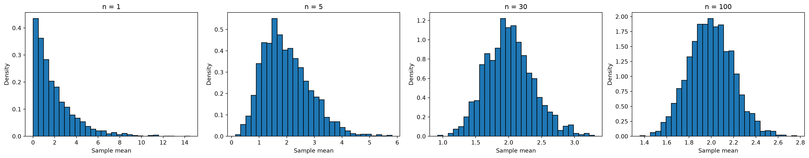

Statistics Session 04: Probabilistic Distributions
Discrete Probability Distributions
statistics
poison
bernuli
discrete
Topics
- Discrete Distributions
- Poisson Distribution
- Bernuli Distribution
- Central Limit Theorem | CLT
Discrete Distributions
Up to this point, we focused on continuous distributions, where variables can take infinitely many values within a range.
Now we move to discrete distributions, which model situations where outcomes are countable.
This shift is important because many business problems are naturally discrete.
A distribution is discrete if:
- The random variable takes countable values
- Probabilities are assigned to exact outcomes
- The total probability is obtained by summing, not integrating
Examples of discrete outcomes:
- Number of purchases made today
- Number of customers who churned this month
- Number of defects in a production batch
- Whether a user clicked an ad (yes / no)
Discrete Random Variables
A discrete random variable is a numerical description of a countable outcome.
Typical forms:
- Binary outcomes: \(X \in \{0,1\}\)
- Counts: \(X = 0,1,2,3,\dots\)
Examples:
- \(X = 1\) if a customer churns, \(0\) otherwise
- \(X\) = number of purchases per user
- \(X\) = number of support tickets per day
Probability Mass Function
Discrete distributions are described by a Probability Mass Function (PMF).
The PMF answers the question:
What is the probability that the random variable equals a specific value?
Mathematically:
\[ P(X = x) \]
Core Properties of a PMF
- \(0 \le P(X = x) \le 1\)
- Probabilities are assigned to exact values
- The total probability sums to 1:
\[ \sum_x P(X = x) = 1 \]
Discrete vs Continuous
| Aspect | Discrete | Continuous |
|---|---|---|
| Possible values | Countable | Infinite |
| Probability at a point | Meaningful | Always 0 |
| Mathematical tool | Sum | Integral |
| Function | PMF |
Do Not Confuse Them
It is critical to clearly distinguish between PMF and PDF.
PMF (Probability Mass Function):
Used for discrete random variables. It assigns probability to exact values: \[ P(X = x) \]PDF (Probability Density Function)
Used for continuous random variables. It does not give probabilities at exact points: \[ P(X = x) = 0 \]
Key differences:
- PMF values are actual probabilities
- PDF values are densities, not probabilities
- PMFs sum to 1
- PDFs integrate to 1
Using a PDF when the data is discrete (or vice versa) leads to incorrect interpretations and wrong conclusions.
Why Descrete Destributions are Essential?
Discrete distributions are essential when modeling:
- Decisions (yes / no)
- Event counts
- Conversion funnels
- Operational metrics
- Risk events
They allow analysts to:
- Quantify uncertainty in decisions
- Estimate probabilities of rare events
- Optimize policies and thresholds
Poisson Distribution
The Poisson Distribution models a very common business question:
How many times does an event occur within a fixed time (or space) interval?
Examples of such intervals:
- per hour
- per day
- per kilometer
- per page view session
A random variable \(X\) follows a Poisson distribution if:
\[ X \sim \text{Poisson}(\lambda) \]
where:
\(\lambda > 0\) is the average number of events per interval
The parameter \(\lambda\) captures the typical intensity of events.
It answers:
“On average, how many events should I expect in this interval?”
Importantly:
- Events are independent
- The average rate is stable
- Events occur randomly, not in bursts or schedules
Real-World Narrative
Imagine a retail store observing customer foot traffic.
Every 10 minutes, a random number of customers enter the store.
Over many days, management notices:
- Some intervals have 1–2 customers
- Some have 5–6 customers
- Occasionally, none
Yet the average stays roughly the same.
Typical Poisson use cases in retail and digital analytics:
- number of customers entering per hour
- number of purchases per minute in an online shop
- number of returns processed in each 30-minute window
- number of carts abandoned per hour
If these events:
- happen independently
- occur at a stable average rate
…then the count of events per interval follows a Poisson distribution.
Probability Mass Function
The PMF of a Poisson random variable is:
\[ P(X = x) = \frac{\lambda^x e^{-\lambda}}{x!}, \quad x = 0,1,2,\dots \]
- \(x\) is an exact count
- This formula gives the probability of seeing exactly \(x\) events
Expected Value and Variance
For a Poisson distribution both Variance and Expected Value
\[ E[X] = \lambda \]
\[ Var(X) = \lambda \]
- The average number of events equals \(\lambda\)
- The uncertainty (variance) grows at the same rate
This makes Poisson models easy to interpret and diagnose.
Business Interpretation of \(\lambda\)
- Large \(\lambda\) → frequent events
- Small \(\lambda\) → rare events
Concrete examples:
- \(\lambda = 2\) → about 2 calls per hour
- \(\lambda = 15\) → about 15 website visits per minute
- \(\lambda = 0.2\) → a rare failure, once every 5 intervals
Business Applications of Poisson Distribution
Poisson models are widely used in practice for:
- customer arrivals and foot traffic
- call center volume estimation
- website click and impression counts
- manufacturing defects
- incident and outage reporting
These models help translate random counts into actionable forecasts.
Spreadsheet Demonstration
Assume \(\lambda\) is stored in cell B1.
- PMF for \(x\):
=POISSON.DIST(x, B1, FALSE) - CDF (at most \(x\) events):
=POISSON.DIST(x, B1, TRUE)
Typical spreadsheet questions:
- “What is the probability of more than 10 calls this hour?”
- “What is the chance we see zero purchases in 5 minutes?”
These are answered directly using the Poisson CDF.
Tip
Reference for POISSON.DIST in Distributions Spreadsheets:
Relationship to Continuous Models
- Exponential distribution models time between events
- Poisson distribution models number of events
They describe the same process from different perspectives.
Visualization
- Left plot → PMF for \(\lambda = 3\) and \(\lambda = 10\)
- Right plot → likelihood as a function of \(\lambda\)
Interpretation
- Higher \(\lambda\) means more customers entering per time interval.
- Lower \(\lambda\) means slower foot traffic.
In our observed retail data:
- Total customers: \(S = 23\)
- Number of intervals: \(n = 6\)
- MLE: \(\hat{\lambda} = 23/6 = 3.83\) customers per interval
Meaning
- on average, about 3.8 customers arrive every 10 minutes,
- which translates to roughly 23 customers per hour.
This insight directly supports:
- staff scheduling
- checkout lane allocation
- peak-hour planning
- demand forecasting
- capacity optimization
Poisson models turn randomness into operational clarity.
Case Study
In practice, “fitting a Poisson model” means:
- confirming the data matches the Poisson story
- estimating \(\lambda\)
- checking whether the fitted model matches the observed counts
Business Context
A retail store records the number of customers entering the store every 10 minutes during a weekday afternoon (14:00–16:00).
- Time window length is fixed
- Events are counts
- Goal: model arrivals and estimate \(\lambda\)
Observed Data (Raw Counts)
| Interval | Time Window | Customers |
|---|---|---|
| 1 | 14:00–14:10 | 4 |
| 2 | 14:10–14:20 | 3 |
| 3 | 14:20–14:30 | 5 |
| 4 | 14:30–14:40 | 2 |
| 5 | 14:40–14:50 | 6 |
| 6 | 14:50–15:00 | 4 |
| 7 | 15:00–15:10 | 3 |
| 8 | 15:10–15:20 | 5 |
| 9 | 15:20–15:30 | 4 |
| 10 | 15:30–15:40 | 6 |
| 11 | 15:40–15:50 | 2 |
| 12 | 15:50–16:00 | 4 |
Summary Statistics
Let \(X\) = number of customers per 10-minute interval.
- Number of intervals: \(n = 12\)
- Total customers: \(S = 48\)
- Sample mean:
\[ \bar{x} = \frac{48}{12} = 4 \]
This strongly suggests a candidate model:
\[ X \sim \text{Poisson}(\lambda = 4) \]
Define the Random Variable
Let:
\[ X = \text{number of customers entering the store in a 10-minute interval} \]
Key properties:
- \(X\) is a count
- \(X \in \{0,1,2,\dots\}\)
- Interval length is fixed
This definition already aligns with the Poisson framework.
Before computing anything, we check the story, not formulas.
- Fixed interval length → yes (10 minutes)
- Counting events → yes (customers)
- Independence → reasonable in short windows
- Stable average rate → plausible for this time range
This tells us:
A Poisson model is a reasonable first approximation.
Bernoulli Distribution
The Bernoulli Distribution models the most fundamental probabilistic question in data analytics and business decision-making:
Did an event happen or not?
This is the simplest form of uncertainty we encounter in practice.
There are only two possible outcomes for a Bernoulli random variable:
- success
- failure
These outcomes can be represented in many equivalent ways depending on the business context:
- yes / no
- 1 / 0
- click / no click
- purchase / no purchase
- tail / head (ղուշ / գիր)
A random variable \(X\) follows a Bernoulli distribution if:
\[ X \sim \text{Bernoulli}(p) \]
where:
- \(p \in [0,1]\) is the probability of success
Unlike the Poisson distribution, which models how many times an event occurs over an interval, the Bernoulli distribution focuses on a single decision, attempt, or event.
It answers the question:
“Did the event occur this time?”
What Is a Bernoulli Trial
A Bernoulli trial is a single experiment characterized by:
- exactly one attempt
- exactly two possible outcomes
- a fixed probability of success
Each trial is assumed to be independent of the others.
This structure appears constantly in real-world data.
Examples of Bernoulli trials include:
- Did a user click an advertisement?
- Did a customer complete a purchase?
- Did a transaction fail?
- Did a device respond to a health check?
Each experiment produces a single binary outcome.
Real-World Narrative
Consider an online store tracking customer conversions.
For each user session, the outcome is recorded as:
- Purchase →
1
- No purchase →
0
Across thousands of sessions:
- Some users convert
- Most users do not
However, each session is evaluated independently, with the same underlying probability of conversion.
This is precisely the setting modeled by a Bernoulli distribution.
Typical Bernoulli use cases in business analytics include:
- ad click behavior (clicked / not clicked)
- conversion events (purchase / no purchase)
- email engagement (opened / ignored)
- fraud detection flags (fraud / legitimate)
- churn indicators (churned / stayed)
Probability Mass Function (PMF)
Because the Bernoulli distribution is discrete, it is described using a Probability Mass Function (PMF).
The PMF of a Bernoulli random variable is:
\[ P(X = x) = p^x (1-p)^{1-x}, \quad x \in \{0,1\} \]
This formula yields two probabilities:
- \(P(X = 1) = p\)
- \(P(X = 0) = 1 - p\)
These are the only possible outcomes, and their probabilities always sum to 1.
PMF vs PDF
- Bernoulli is a discrete distribution, so we use a PMF
- Continuous distributions (Normal, Exponential) use a PDF
- PMFs assign probability to exact outcomes
- PDFs describe density, not probability at a single point
Never mix these concepts.
Expected Value and Variance
For a Bernoulli random variable:
\[ E[X] = p \]
\[ Var(X) = p(1-p) \]
Interpretation:
- The expected value equals the probability of success
- Variance is largest when \(p = 0.5\), reflecting maximum uncertainty
- Variance decreases as outcomes become more predictable
Business Interpretation of \(p\)
The parameter \(p\) is often one of the most important quantities in analytics.
It represents a rate, probability, or KPI.
- Large \(p\) → success is likely
- Small \(p\) → success is rare
Concrete examples:
- \(p = 0.02\) → 2% conversion rate
- \(p = 0.35\) → 35% email open rate
- \(p = 0.90\) → highly reliable system
Bernoulli models appear everywhere in practice:
- conversion modeling
- churn indicators
- A/B testing outcomes
- fraud detection flags
- quality control pass/fail checks
They form the building block for more advanced statistical models.
Spreadsheet Demonstration
Assume the probability \(p\) is stored in cell B1.
- Probability of success:
=B1 - Probability of failure:
=1-B1 - Simulate a Bernoulli outcome:
=IF(RAND()<B1,1,0) - Estimate \(p\) from observed data:
=AVERAGE(range) - Variance:
=B1*(1-B1)
Typical spreadsheet questions include:
- “What fraction of users converted?”
- “How volatile is this conversion rate?”
Case Study
Business Context
An e-commerce company records whether each visitor completes a purchase during a session.
Each session is encoded as:
1→ purchase
0→ no purchase
Observed Data
{.smaller}
| Session | Purchase |
|---|---|
| 1 | 0 |
| 2 | 1 |
| 3 | 0 |
| 4 | 0 |
| 5 | 1 |
| 6 | 0 |
| 7 | 1 |
| 8 | 0 |
| 9 | 0 |
| 10 | 1 |
Summary Statistics
Let \(X\) denote the purchase indicator per session.
- Number of sessions: \(n = 10\)
- Total purchases: \(S = 4\)
The sample mean is:
\[ \bar{x} = \frac{4}{10} = 0.4 \]
This provides a natural estimate of the probability of purchase:
\[ \hat{p} = 0.4 \]
Defining the Random Variable
The Bernoulli random variable can be written explicitly as:
\[ X = \begin{cases} 1 & \text{if a purchase occurs} \\ 0 & \text{otherwise} \end{cases} \]
Key properties:
- binary outcome
- independent trials
- fixed probability per session
Before applying any formulas, we validate the modeling story:
- single decision → yes
- two outcomes → yes
- stable probability → reasonable
Conclusion:
A Bernoulli model is an appropriate first representation of this process.
Bernoulli distributions transform binary behavior into measurable probabilities, forming the foundation of modern data analytics and statistical modeling.
Tip
Reference to the Distributions Spreadsheets:
Final Intuition Summary
- Use Uniform for “random within limits.”
- Use Exponential for “time until next event.”
- Use Poisson for “number of events per interval.”
- Use Bernoulli for “one yes/no outcome”.
Together, these four distributions cover the majority of basic retail/business modeling scenarios:
- foot traffic analysis,
- checkout optimization,
- conversion measurement,
- forecasting purchase behavior
- and customer journey analytics.
Central Limit Theorem (CLT)
The normal distribution is kind of magical in that we see it a lot in nature. But there’s a reason for that, and that reason makes it super useful for statistics as well. The Central Limit Theorem is the basis for a lot of statistics and the good news is that it is a pretty simple concept. That magic is called The Central Limit Theorem (CLT).

“Even if you’re not normal, the average is normal”
Big Idea
The Central Limit Theorem states that when we take many independent samples from a population and compute the average of each sample, the distribution of those averages:
- approaches a Normal distribution
- as the sample size increases
- regardless of the shape of the original distribution
(provided the variance is finite)
In symbols, if:
\[ X_1, X_2, ..., X_n \] are independent with mean \(\mu\) and variance \(\sigma^2\), then the sample mean: \[ \bar{X} = \frac{1}{n}\sum_{i=1}^n X_i \] has an approximate Normal distribution for large \(n\): \[ \bar{X} \approx \mathcal{N}\!\left(\mu,\,\frac{\sigma^2}{n}\right) \]
Why This Matters
In analytics, we rarely care about one single observation;
Instead we often care about:
- sample means
- totals
- proportions
- differences of means
Even if the raw data come from a non-Normal distribution, the CLT tells us the distribution of these statistics will be approximately Normal when the sample size is sufficiently large.
This underpins many common tools, including:
- confidence intervals
- hypothesis tests
- regressions
- A/B testing
- control charts
Intuition with an Example
Imagine you repeatedly sample from a skewed distribution — say, an exponential distribution (like waiting times).
Even though individual values are skewed, the distribution of average values will look more symmetric and bell-shaped when you increase the sample size.
This “averaging effect” is why Normal distributions are so prevalent in real data.
Simulation of CLT

What the Simulation Shows
- For small sample sizes, the distribution of sample means is skewed.
- As sample size increases:
- the distribution becomes more symmetric
- it takes on the bell-shaped form
- it becomes closer to Normal
This happens even though the original population was not Normal.
Conditions for the CLT to Work
The CLT applies when:
- samples are independent
- the sample size is large enough
- the population has finite variance
In practice, a sample size of 30 or more is often enough for many distributions.
Practical Importance
The CLT justifies:
- using Normal distribution tools for inference
- approximating distributions of sums/means
- constructing confidence intervals
- performing hypothesis tests
Even for non-Normal raw data, aggregating information leads to Normal behavior.
Summary
- The Central Limit Theorem explains the widespread appearance of Normal distributions.
- It applies to sample means (and sums) of independent observations.
- It works even when individual data are not Normal.
- It is a cornerstone of statistical inference.
“Even if you’re not normal, the average is normal.”